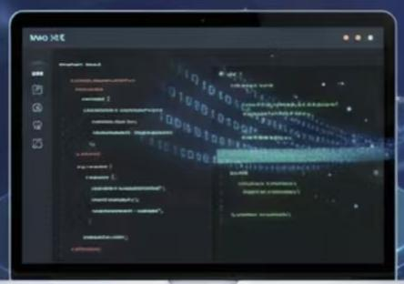

问题定义#
把「看不见的学习过程」变成「可记录、可理解、可反馈」的过程数据，是本作品要回答的核心问题。
核心研究问题
- 如何采集：怎样把代码输入、运行、报错、修改、再次运行等细粒度行为完整留存？
- 如何理解：怎样把碎片化的离散操作，重构为连续、可还原、可诊断的学习轨迹？
- 如何反馈：怎样结合上下文与知识点，把过程分析转化为学生能理解、能执行的改进建议？
价值主张

让学习过程从「不可见」走向「可追溯」，让学习问题从「结果判断」走向「过程理解」，让学习优化从「经验驱动」走向「数据驱动」。
范围边界
本作品聚焦编程实训场景的过程评价，以在线代码编辑与运行环境为基础，覆盖学生端练习、教师端诊断与管理端支撑三类角色，不涉及底层编译环境的重新实现。